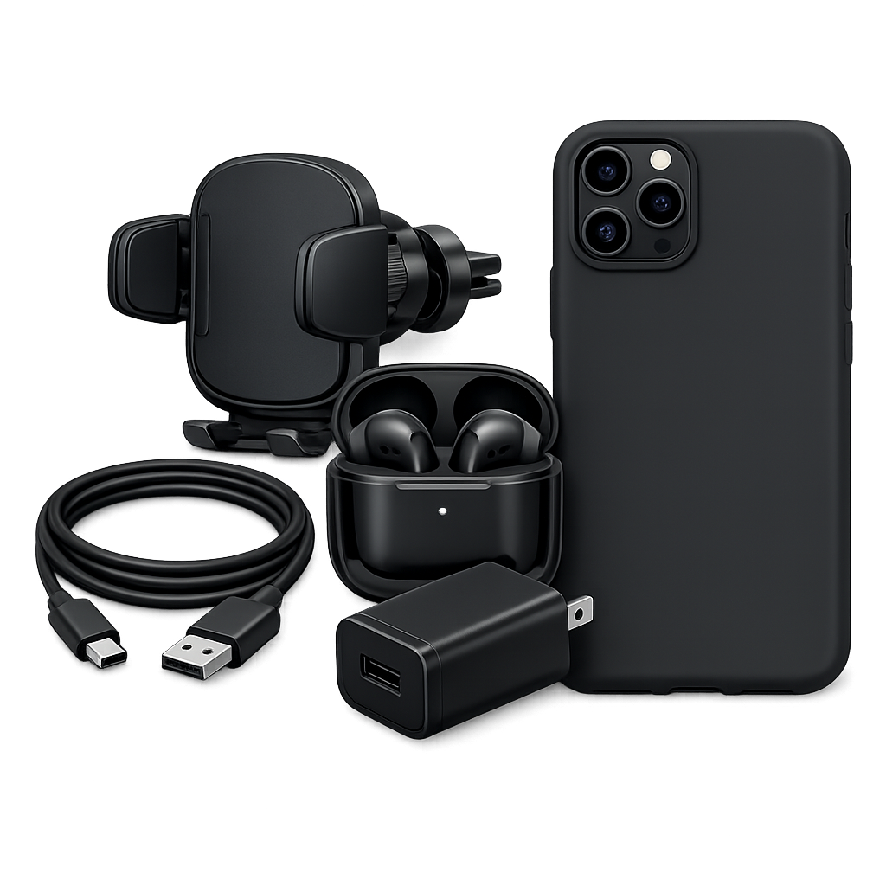

Acessórios
Acessórios para celulares e computadores que oferecem mais praticidade, conforto e desempenho para o seu dia a dia.
Confira os detalhes de nosso produto
Os acessórios para celulares e computadores desempenham um papel importante no dia a dia, oferecendo mais praticidade, conforto e eficiência durante o uso dos dispositivos. Seja para trabalho, estudos ou entretenimento, os acessórios certos ajudam a melhorar a experiência do usuário.
Na ConnectX, trabalhamos com uma variedade de acessórios das principais marcas do mercado, selecionados para atender diferentes necessidades. Nossa linha inclui produtos que complementam e protegem seus equipamentos, proporcionando mais funcionalidade e durabilidade.
Desenvolvidos com materiais de qualidade e tecnologia atual, os acessórios disponíveis oferecem desempenho confiável e compatibilidade com diversos modelos de celulares, notebooks e computadores.
Tecnologia para acompanhar sua rotina
Os acessórios modernos foram criados para tornar o uso de dispositivos eletrônicos mais prático e eficiente. Com soluções voltadas para conectividade, organização, proteção e conforto, eles ajudam a otimizar as atividades do dia a dia.
Entre os principais benefícios estão:
- Maior praticidade no uso de celulares e computadores;
- Produtos desenvolvidos com materiais resistentes e duráveis;
- Melhor conectividade e compatibilidade com diversos dispositivos;
- Mais conforto e organização para ambientes de trabalho e estudo;
- Soluções que ajudam a proteger e aumentar a vida útil dos equipamentos.